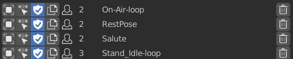

List Items
Items in the Action Bin Listbox
Select Object with Action
Select All Object that uses this action
Click: Check All Action Shift Click: Only Check Active
Load Action
Load This Action to Active Object
Fake User
State of Fake User
Users
Users of this Objects
Name
Name of this Action
Remove
Remove this Item from List